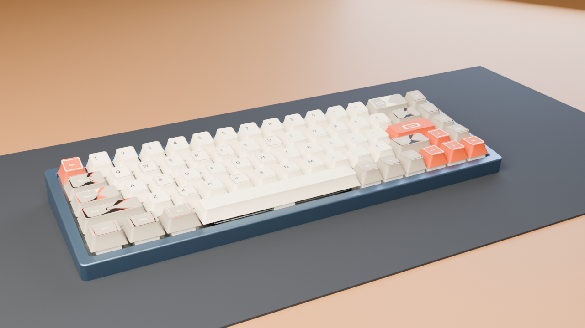
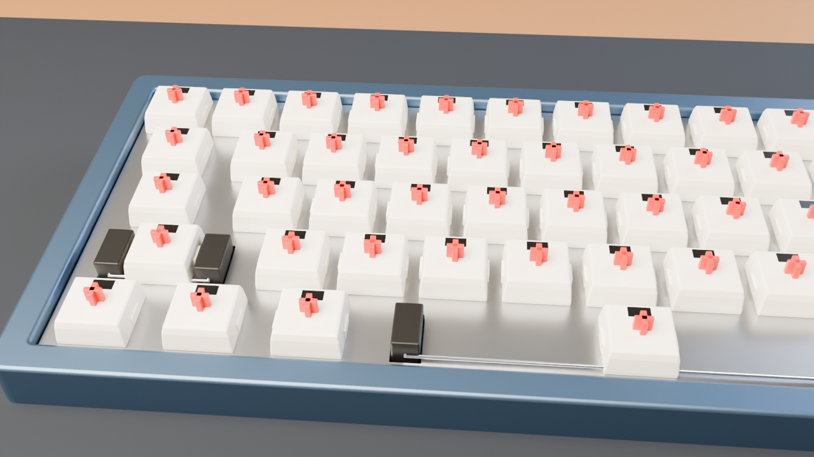
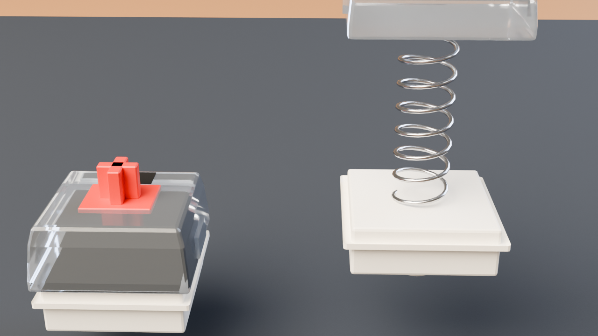
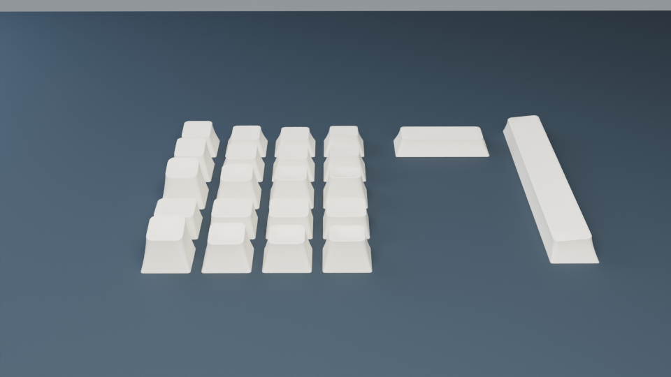
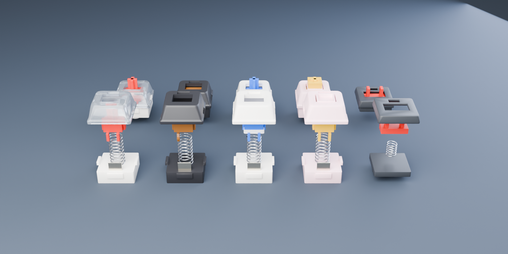
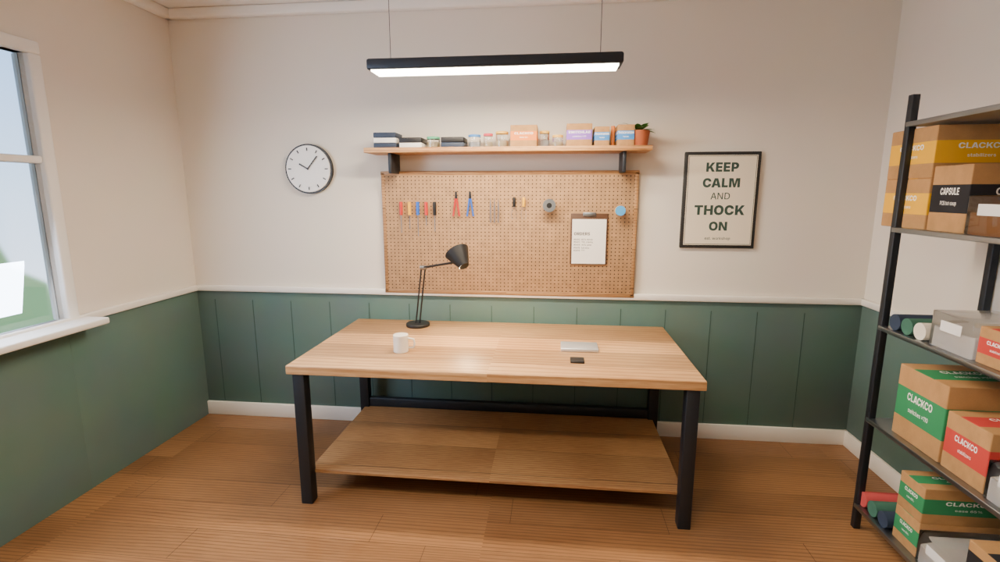
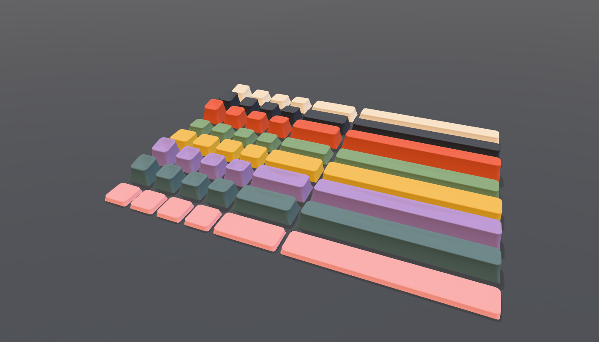
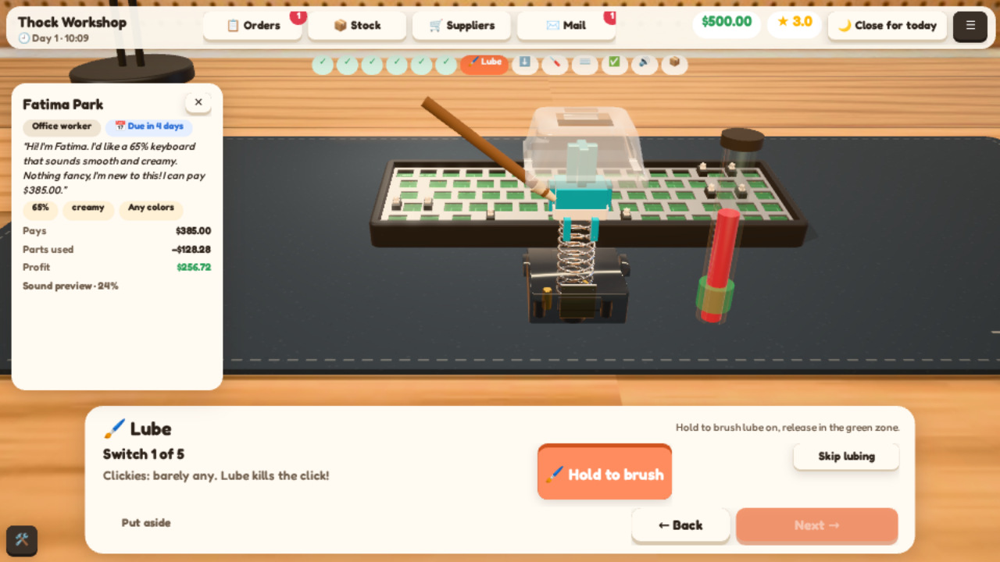
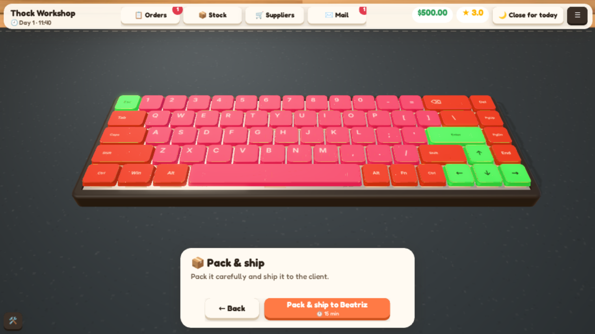
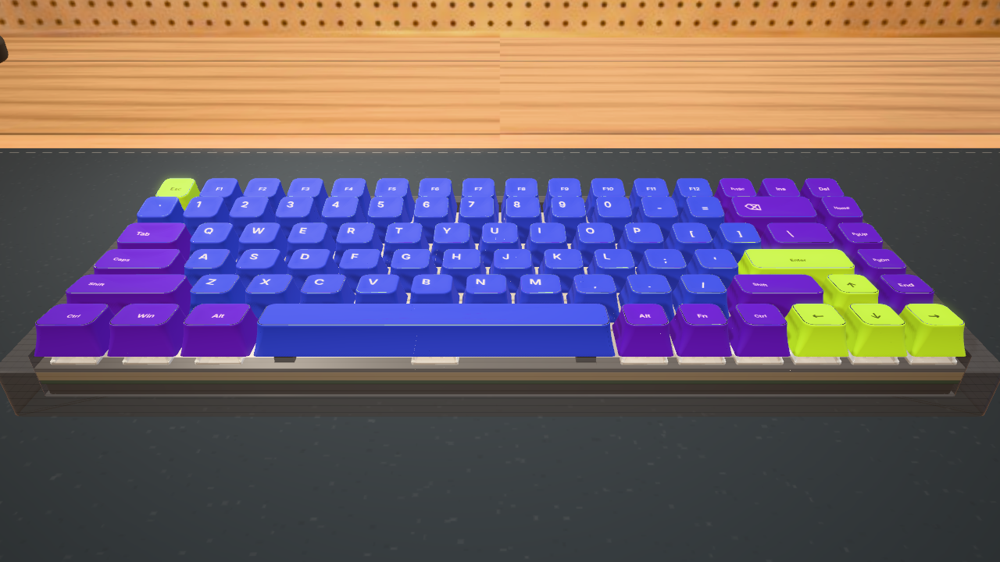

Keyboard proof of concept — modeled in Blender from real specs (Cycles renders)

65% aluminum case (7° typing angle), Cherry-profile PBT keycaps with legends
Keycaps: sculpted rows, cylindrical dish, rounded lip, textured PBT

MX-style switches in a 14 mm-cutout plate, PCB-mount stabilizers with wire

Switch: clear top housing, stem, spring, bottom housing (used for the lube minigame)

Profiles × rows R1–R4: Cherry, OEM, SA, XDA, MT3 (+ 2.25u, 6.25u)
v0.3 — switch families and the workshop

Switch models exported to the game: MX linear (clear top), MX tactile, MX clicky, Box, Choc low-profile — assembled (back) and exploded (front)

The workshop (Cycles). In the game the room is a 360° panorama rendered from the bench; the bench and its props are real meshes

In the game (Babylon, generated at runtime): Cherry, OEM, SA, DSA, XDA, MT3, KAT, low-profile — rows R1–R4, 2.25u, 6.25u

Lube minigame on the real switch model (4×), in front of the keyboard

A low-profile build: Choc switches + low-profile keycaps

75% in a smoked acrylic sandwich case with KAT keycaps